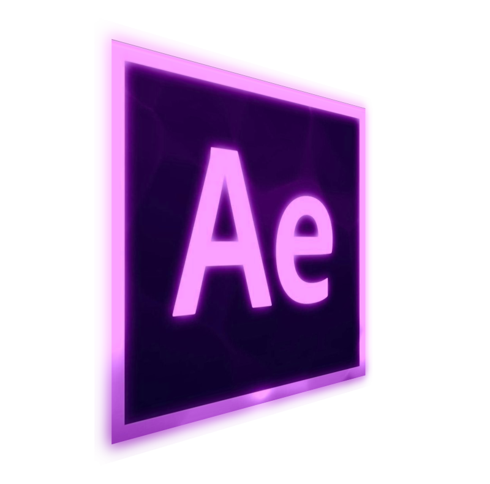

Soy Yeiber.
Editor audiovisual, enfocado en narrativa visual.Transformo ideas en piezas visuales que comunican, conectan y dejan huella.
Colaboro con comunidades, organizaciones y creadores que quieren transformar con imagen y sonido.
Ideal para YouTube, documentales y presentaciones visuales amplias.
Perfecto para reels, TikTok y contenido móvil con impacto.
Producción y dirección creativa de contenido audiovisual para The Mind Boost, orientado a terapeutas profesionales y emprendedores. Piezas desarrolladas bajo pautas comerciales específicas, combinando narrativa épica, textos dinámicos con excelente ritmo en CapCut y una selección de recursos visuales estilizados. Un enfoque donde la creatividad y el diseño se alinean para cumplir con los objetivos de comunicación y conversión del cliente.
Edición estratégica de alto impacto orientada a conversión, optimizando el ritmo visual y la retención.
Animación avanzada de elementos de marca, subtítulos cinéticos y transiciones customizadas en After Effects.
Social Media
Podcast
Sketch
Antes/Después
Extra 1
Extra 2
Podcast
Sketch
Antes/Después
Extra 1
Extra 2
Lyric Visual